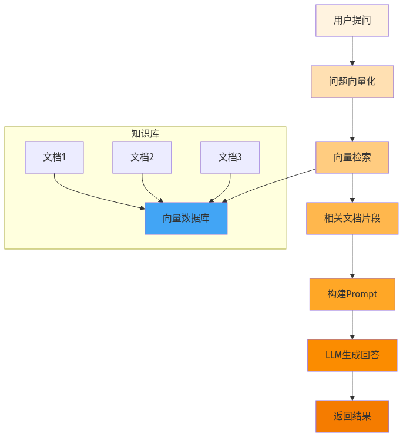
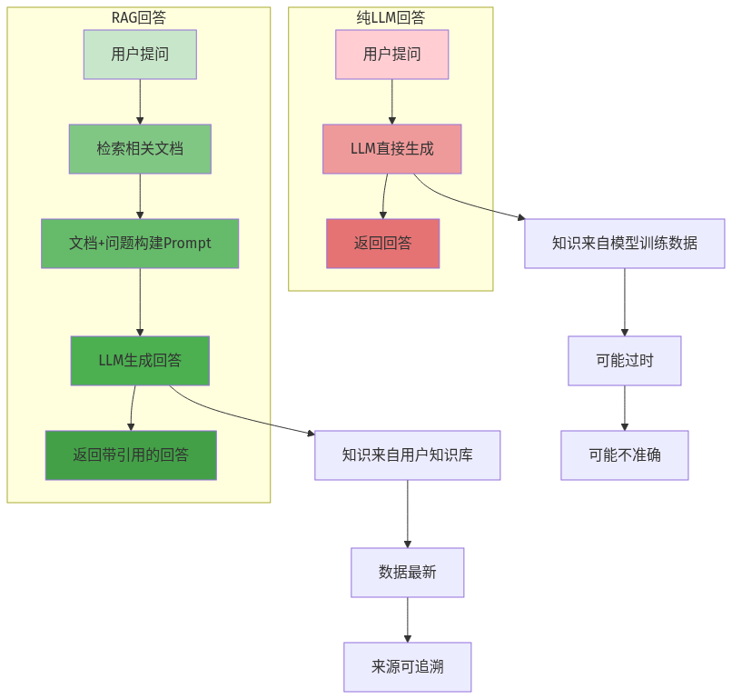
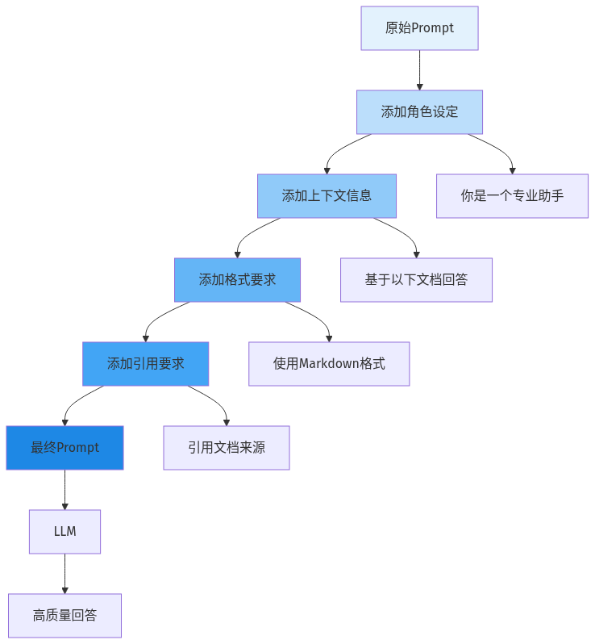

本地大模型知识库系列第07篇 | RAG核心
前面我们已经学会了文档处理、向量数据库和Embedding，现在终于到了最核心的环节——RAG（Retrieval-Augmented Generation，检索增强生成）。
RAG的核心思想非常简单：在让大模型回答问题之前，先从知识库中检索相关的文档片段，然后把这些文档和问题一起交给大模型，让它基于这些文档来回答。

01 RAG vs 纯LLM
为什么需要RAG？直接让大模型回答不行吗？来看一下对比：

02 RAG核心流程详解
RAG的完整流程可以分为三个阶段：
第一阶段：检索
1. 用户提问 → 2. 问题向量化 → 3. 向量检索 → 4. 获取相关文档片段
第二阶段：构建
5. 将检索到的文档和原始问题一起构建成Prompt
第三阶段：生成
6. 将Prompt交给大模型 → 7. LLM生成回答 → 8. 返回结果
03 Prompt工程
RAG的效果很大程度上取决于Prompt的质量。一个好的Prompt应该包含以下几个要素：

def build_prompt(query, context):
prompt = """你是一个专业的知识库助手，擅长基于给定的文档内容回答问题。
## 角色设定
- 你的回答必须基于提供的文档内容
- 如果文档中没有相关信息，请明确说明"文档中未找到相关信息"
- 回答要清晰、准确、简洁
## 参考文档
{context}
## 用户问题
{query}
## 回答要求
- 使用Markdown格式
- 引用文档来源时使用上标标记
- 保持回答逻辑清晰
- 不要编造信息"""
return prompt.format(context=context, query=query)04 完整RAG实现
from langchain.chains import RetrievalQA
from langchain.llms import Ollama
from langchain.vectorstores import Chroma
from langchain.embeddings import HuggingFaceEmbeddings
# 初始化组件
embeddings = HuggingFaceEmbeddings(model_name="all-MiniLM-L6-v2")
vector_store = Chroma.persist_directory(
persist_directory="./chroma_db",
embedding_function=embeddings
)
llm = Ollama(model="llama3:8b")
# 创建检索器
retriever = vector_store.as_retriever(
search_kwargs={"k": 3}
)
# 创建RAG链
qa_chain = RetrievalQA.from_chain_type(
llm=llm,
chain_type="stuff",
retriever=retriever,
return_source_documents=True
)
# 测试问答
query = "请解释什么是RAG？"
result = qa_chain({"query": query})
print("回答:")
print(result["result"])
print("\n引用来源:")
for doc in result["source_documents"]:
print(doc.metadata.get("source"))⚠️ 常见问题
1. 检索结果不相关：调整chunk_size或更换Embedding模型
2. 回答质量差：优化Prompt或使用更大的模型
3. 回答速度慢：使用更小的模型或添加缓存
4. 上下文超限：减少返回的文档数量(k值)
—— 未完待续 ——
本地大模型知识库系列第07篇
下一篇：问答接口开发——构建你的专属AI助手